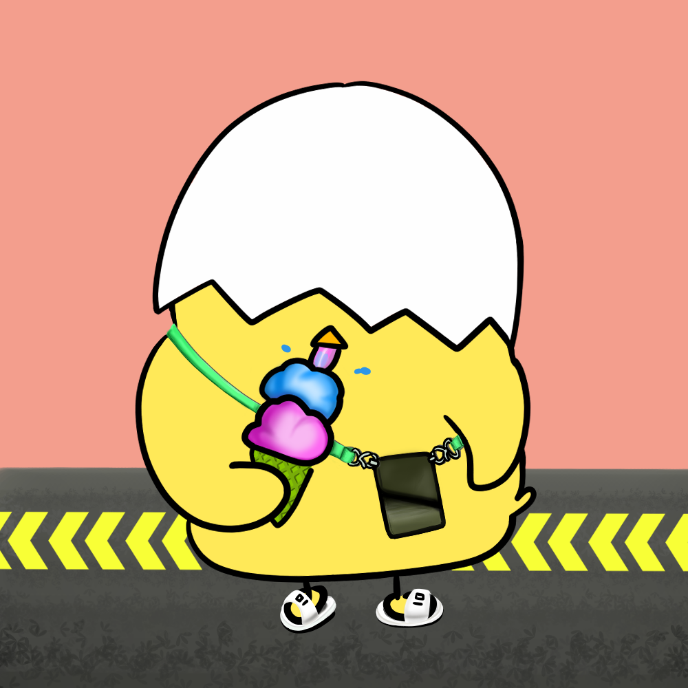

잘잘;
REDUCE;
REUSE;
RECYCLE;
RETHINK;
REACT;
잘잘;이 뭔가요?
잘
쓰고
잘
버리기의 줄임말로 쉬운 분리수거를 지향하는 집단을 말해요.
분리수거
를 잘 하고싶은 모든 이를 위한 곳이에요.
쓰레기 종류별 분리수거 방법을 알아보고 어떻게 재활용되는지도 알아보아요.
♡너,
잘잘;
이 되어주겠어?♡

Please enable JavaScript to view the
comments powered by Disqus.